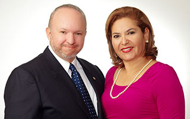

Francisco Pizarro nace en San José de Costa Rica. Es el hijo mayor de 3 hermanos. Abogado con más de 25 años de ejercicio profesional llega hasta los pies de Jesucristo en Enero del año 2004 por medio de las oraciones de su esposa, Ninoska Páramo quien le testifica acerca de Jesucristo.
En Enero del año 2005 asiste a un Desayuno Conferencia organizado en el Hotel San José Palacio, en San José, Costa Rica, participa de un ciclo de conferencias con el Doctor Armando Alducin, fundador de Vida Nueva para el Mundo. Es así como inicia su amistad con él, siendo de inmediato tomado como su mentor y padre espiritual. Inicia sus estudios Ministeriales y Pastorales ese mismo año graduándose tres años después. Estudioso, temperamental y disciplinado, funda con su esposa la Iglesia en Diciembre del 2010, fundamentada en las 5 solas del pensamiento protestante: “Solo la Palabra, Solo la Fe, Solo la Gracia, Solo Cristo Jesús y Solo la Gloria a Dios”.
La iglesia desde el 2012 forma parte del ministerio de Vida Nueva Para El Mundo, con presencia en México, Estados Unidos, Sur América, e Israel.
Nos encontramos en:
Del Hotel Boyeros 150m al Este, Liberia, Guanacaste
Reuniones:
Domingo 09:30 a.m.
Miércoles 07:30 p.m.
Estudios:
Miércoles 08:30 a.m. - Tiempo de oración
Viernes 07:00 p.m. - Discipulado.
Sábado 05:00 p.m. - Jóvenes.
Teléfonos:
+506 2665-6504
+506 2665-6508
Correo:
vidanuevacostarica@yahoo.com
Coordenadas geográficas:
Latitud: 10°37'36.0"N
Longitud: 85°26'29.8"O